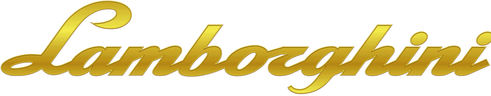
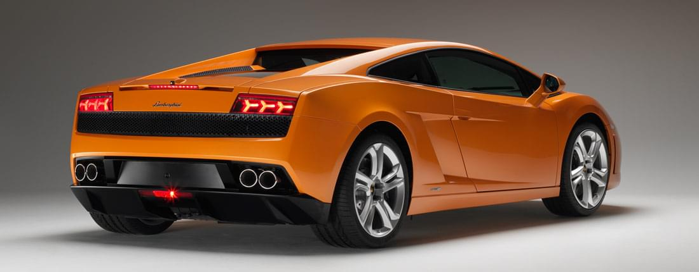

Es más pequeño que el Murciélago. Mide 4300 mm (169,3 plg) de largo y 2560 mm (100,8 plg) de batalla. También es menor en longitud que el Ferrari 360 Modena con 4477 mm (176,3 plg) y que el Porsche 911 Turbo con 4435 mm (174,6 plg), mientras que la batalla es intermedia entre estos dos. Tiene un bastidor de aluminio del mismo estilo de los Audi A2 y Audi A8. El peso aproximado, tomando el depósito de combustible lleno y con un conductor de 80 kg (176 lb) promedio dentro, es de 1546 kg (3408 lb). El motor es un diez cilindros en V de 4961 cm³ (5 litros) con una potencia máxima de 500 CV (493 HP; 368 kW) a las 7800 rpm. Tiene tracción total y un diferencial de acoplamiento viscoso central. Tiene dos cajas de cambio disponibles, ambas de seis velocidades: una manual con la rejilla característica en la palanca y otra automática con mandos secuenciales en el volante, llamada «e.gear». Alcanza una velocidad máxima de 309 km/h (192 mph), que no es mucho para su potencia. El 360 Modena hace 295 km/h (183 mph) con 400 CV (395 HP; 294 kW) y el 911 Turbo, 305 km/h (190 mph) con 420 CV (414 HP; 309 kW). Según Lamborghini, ha dado más importancia a la estabilidad a gran velocidad que a un coeficiente de penetración bajo. Se ha planteado este modelo como un deportivo para usar con frecuencia, es por esa razón tiene el equipamiento de seguridad normal en una berlina y cosas como retrovisores plegables eléctricamente. El Gallardo se fabrica en la planta de Lamborghini en Sant'Agata Bolognese, Italia. Lamborghini siendo una marca propiedad de Audi AG, sigue utilizando nombres taurinos. «Gallardo» era el nombre de una ganadería del siglo xviii, que quedó integrada posteriormente en la ganadería Miura. Desde 1991 cuando se dejó de fabricar el LM002 y el Diablo, quedó como el único Lamborghini en producción; esta marca no ha tenido más de un modelo. Desde 1987, cuando coexistían el Jalpa 3500 y el Countach, no hay dos cupés en producción simultáneamente. El diseño de este deportivo comenzó en el año 2000 con una propuesta de Italdesign Giugiaro desarrollada por el Centro de Estilo de Lamborghini. La forma estrecha del Gallardo es una característica cada vez más común en la marca y la carrocería está hecha de aluminio. Viene con un alerón trasero que se levanta al alcanzar una alta velocidad, pero no tiene tomas de aire dinámicas como el Murciélago. Las tomas de aire delanteras son para el radiador, y una de las laterales para el aceite. Tiene espejos retrovisores plegables debido a la anchura. Sus llantas tienen cinco orificios circulares combinados con cinco brazos rectos. Por dentro tiene calefacción, retrovisor de oscurecimiento interior, airbags frontales y laterales y barras de protección en las puertas. Tiene un motor V10 de 4961 cm³ (5 litros) fabricado en aluminio, con un ángulo de V de 90º. El cigüeñal está descentrado en 18º, quedando a 72º, para mejorar el orden de encendido. Además al ser más pronunciado el motor es más bajo, además de bajar también el centro de gravedad. Es un motor de carrera larga: 82,5 x 92,8 mm (3,25 x 3,65 plg), por lo que la velocidad media del pistón llega hasta 24,7 m/s (81,0 pies por segundo) a las 8000 rpm. La culata tiene doble (DOHC) árbol de levas movidos por cadena y cuatro válvulas por cilindro. El encendido es de tipo directo, con una bobina para cada cilindro. La distribución es variable continua en la admisión y el escape; mientras mayor es el régimen, el momento de apertura de la admisión es más avanzado.